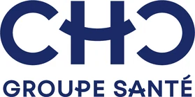
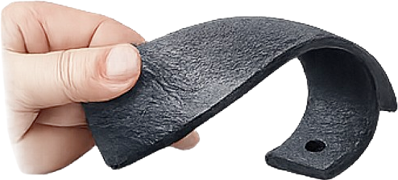

3D Printing& CNC machining
Prototypes, technical parts and small batches, from one-off to production. SLS, FDM and SLA 3D printing, CNC milling, 3D scanning and modelling: all done in our workshop. Quote within 24 h.

Six processes.
One contact.
The process is chosen according to your specifications: strength, precision, surface finish, quantity, budget.
SLS
Robust functional nylon parts, no supports. Complex shapes and series.
Explore →Filament depositionFDM
Prototypes, tooling, large parts and multi-colour. From PLA to PEEK and ULTEM.
Explore →StereolithographySLA
Very high definition, smooth surfaces, fine details: scale models and appearance parts.
Explore →MillingCNC
Precise parts machined from solid: aluminium, brass, bronze, titanium, technical plastics.
Explore →Digitising3D scanning
Reverse engineering, reproduction of unavailable parts, shape inspection.
Explore →Laser engravingLaser
Personalisation, marking, numbering, cutting and signage.
Explore →What's running
in the workshop.

Supermaker SLS1518
Supermaker SLS1518: compact industrial SLS printing, 150×150×180 mm build volume, PA11, PA12, TPU, CF, GF, integrated powder recycling. O&D, Liège.
Open the sheet →
Supermaker SLS3540 Pro
Supermaker SLS3540 Pro: large-format industrial SLS printing, 350×350×430 mm build volume, PA11, PA12, TPU, CF, GF, integrated powder recycling. O&D…
Open the sheet →
Bambu Lab H2C
The Bambu Lab H2C prints FDM in up to 24 colours, ideal for your multi-colour and multi-material parts. Available at O&D Impression 3D in…
Open the sheet →
Bambu Lab X1C
Bambu Lab X1C: high-speed FDM printing, 256×256×256 mm build volume, ideal for series production and rapid prototyping. O&D Impression 3D…
Open the sheet →
Prusa Core One
Prusa Core One: industrial FDM printer compatible with ASA, ABS, PC and PA, for your prototypes and small production runs. At O&D Impression 3D in…
Open the sheet →
Modix Big Meter
Very large 3D printing with the Modix Big Meter. XXL and multi-material parts available at O&D Impression 3D in Liège, Belgium.
Open the sheet →



From PLA
to PEEK.
29 detailed material sheets: properties, advantages, limitations and compatible machines.





From file
to part.
Send
STEP, STL or 3MF file, drawing, sketch… or the part to be scanned.
Analysis & quote
Instant with a 3D file, custom within 24 h.
Manufacturing
Process and material chosen according to your constraints.
Delivery
Shipping or pick-up at the Welkenraedt workshop.
Real
projects.

Polypropylene Part for a Speech Therapist
Custom rehabilitation tool for a speech therapist, reproduced in polypropylene by 3D printing and adapted to patients' needs. O&D project…
Open the sheet →
Mincer Gear Reproduced in 3D
Broken mincer gear reproduced in PLA: reverse engineered in 1 h, part ready in under 48 h. A project by O&D Impression 3D, Welkenraedt.
Open the sheet →
Audi S3 Parts Reproduced in PAHT-CF
Reproduction of damaged Audi S3 parts in PAHT-CF and PLA: bumper grille and S3 logo covers. A project by O&D Impression 3D, Liège.
Open the sheet →
Infrabel Scale Model
3D-printed miniature PLA rails for Infrabel's inauguration scale model. A project by O&D Impression 3D, workshop in Welkenraedt (Liège).
Open the sheet →
Stool Feet
40 cm stool feet in black PLA, custom-printed for Airbnb holiday homes in Herve: 24 h per part, free prototype. O&D project…
Open the sheet →
Fence Spike Reproduced in ASA
Broken decorative fence spike, redesigned from photos and reprinted in UV-resistant ASA on a Bambu Lab X1C. O&D project, Welkenraedt.
Open the sheet →Out in the field.
We go out to meet industry: Euronaval for naval and defence, Formnext for additive manufacturing, Batibouw for construction.


Choose, compare,
price.
Quiz: which technology?
A few questions to find out which process suits your part.
Open →ToolInstant quote
Drop your STL, choose the material: instant estimate.
Open →ToolMaterial comparison
PLA vs PETG, PEEK vs PEKK vs Ultem, FDM vs SLS vs SLA…
Open →ToolMaterials & technologies guide
The complete guide to choosing process and material.
Open →Your part, manufactured.
Send your 3D file or describe what you need: instant quote with a file, custom quote within 24 h.